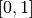

First steps¶
This guide is intended to give you a simple introduction to ODL and how to work with it. If you need help with a specific function you should look at the ODL API reference.
The best way to get started with ODL as a user is generally to find one (or more) examples that are relevant to whichever problem you are studying. These are available in the examples folder on GitHub. They are mostly written to be copy-paste friendly and show how to use the respective operators, solvers and spaces in a correct manner.
Example: Solving an inverse problem¶
In what follows, we will give an example of the workflow one might have when solving an inverse problem as it is encountered “in real life”. The problem we want to solve is
Where  is the convolution operator
is the convolution operator
where  is the convolution kernel,
is the convolution kernel,  is the unknown solution and
is the unknown solution and  is known data.
As is typical in applications, the convolution operator may not be available in ODL (we’ll pretend it’s not),
so we will need to implement it.
is known data.
As is typical in applications, the convolution operator may not be available in ODL (we’ll pretend it’s not),
so we will need to implement it.
We start by finding a nice implementation of the convolution operator –
SciPy happens to have one –
and create a wrapping Operator for it in ODL.
import odl
import scipy.signal
class Convolution(odl.Operator):
"""Operator calculating the convolution of a kernel with a function.
The operator inherits from ``odl.Operator`` to be able to be used with ODL.
"""
def __init__(self, kernel):
"""Initialize a convolution operator with a known kernel."""
# Store the kernel
self.kernel = kernel
# Initialize the Operator class by calling its __init__ method.
# This sets properties such as domain and range and allows the other
# operator convenience functions to work.
super(Convolution, self).__init__(
domain=kernel.space, range=kernel.space, linear=True)
def _call(self, x):
"""Implement calling the operator by calling scipy."""
return scipy.signal.fftconvolve(self.kernel, x, mode='same')
We can verify that our operator works by calling it on some data.
This can either come from an outside source, or from simulations.
ODL also provides a nice range of standard phantoms such as the cuboid and shepp_logan phantoms:
# Define the space the problem should be solved on.
# Here the square [-1, 1] x [-1, 1] discretized on a 100x100 grid.
space = odl.uniform_discr([-1, -1], [1, 1], [100, 100])
# Convolution kernel, a small centered rectangle.
kernel = odl.phantom.cuboid(space, [-0.05, -0.05], [0.05, 0.05])
# Create convolution operator
A = Convolution(kernel)
# Create phantom (the "unknown" solution)
phantom = odl.phantom.shepp_logan(space, modified=True)
# Apply convolution to phantom to create data
g = A(phantom)
# Display the results using the show method
kernel.show('kernel')
phantom.show('phantom')
g.show('convolved phantom')


We can use this as right-hand side in our inverse problem.
We try one of the most simple solvers, the landweber solver.
The Landweber solver is an iterative solver that solves
where is a constant and is the adjoint operator associated with .
The adjoint is a generalization of the transpose of a matrix and defined as the (unique) operator such that
where is the inner product.
It is implemented in odl as ~odl.operator.operator.Operator.adjoint.
Luckily, the convolution operator is self adjoint if the kernel is symmetric, so we can add:
class Convolution(odl.Operator):
... # old code
@property # making the adjoint a property lets users access it as conv.adjoint
def adjoint(self):
return self # the adjoint is the same as this operator
With this addition we are ready to try solving the inverse problem using the landweber solver:
# Need operator norm for step length (omega)
opnorm = odl.power_method_opnorm(A)
f = space.zero()
odl.solvers.landweber(A, f, g, niter=100, omega=1/opnorm**2)
f.show('landweber')

This solution is not very good, mostly due to the ill-posedness of the convolution operator.
Other solvers like conjugate gradient on the normal equations (conjugate_gradient_normal) give similar results:
f = space.zero()
odl.solvers.conjugate_gradient_normal(A, f, g, niter=100)
f.show('conjugate gradient')

A method to remedy this problem is to instead consider a regularized problem. One of the classic regularizers is Tikhonov regularization where we add regularization to the problem formulation, i.e. slightly change the problem such that the obtained solutions have better regularity properties. We instead study the problem
where  is a “roughening’ operator and
is a “roughening’ operator and  is a regularization parameter that determines how strong the regularization should be.
Basically one wants that is less smooth than so that the optimum solution is more smooth.
To solve it with the above solvers, we can find the first order optimality conditions
is a regularization parameter that determines how strong the regularization should be.
Basically one wants that is less smooth than so that the optimum solution is more smooth.
To solve it with the above solvers, we can find the first order optimality conditions
This can be rewritten on the form :
We first use a multiple of the IdentityOperator in ODL as ,
which is also known as ‘classical’ Tikhonov regularization.
Note that since the operator  above is self-adjoint we can use the classical
above is self-adjoint we can use the classical conjugate_gradient method instead of conjugate_gradient_normal.
This improves both computation time and numerical stability.
B = odl.IdentityOperator(space)
a = 0.1
T = A.adjoint * A + a * B.adjoint * B
b = A.adjoint(g)
f = space.zero()
odl.solvers.conjugate_gradient(T, f, b, niter=100)
f.show('Tikhonov identity conjugate gradient')

Slightly better, but no major improvement.
What about letting be the Gradient?
B = odl.Gradient(space)
a = 0.0001
T = A.adjoint * A + a * B.adjoint * B
b = A.adjoint(g)
f = space.zero()
odl.solvers.conjugate_gradient(T, f, b, niter=100)
f.show('Tikhonov gradient conjugate gradient')

Perhaps a bit better, but far from excellent.
Let’s try more modern methods, like TV regularization. Here we want to solve the problem
Since this is a non-differentiable problem we need more advanced solvers to solve it.
One of the stronger solvers in ODL is the Douglas-Rachford Primal-Dual method (douglas_rachford_pd) which uses Proximal Operators to solve the optimization problem.
However, as a new user you do not need to consider the specifics, instead you only need to assemble the functionals involved in the problem you wish to solve.
Consulting the douglas_rachford_pd documentation we see that it solves problems of the form
where , are convex functions,  are linear
are linear Operator’s.
By identification, we see that the above problem can be written in this form if we let be the indicator function on ,
be the squared l2 distance ,
be the norm  ,
,
 be the convolution operator and be the gradient operator.
be the convolution operator and be the gradient operator.
There are several examples available using this solver as well as similar optimization methods,
e.g. forward_backward_pd, pdhg, etc in the ODL examples/solvers folder.
# Assemble all operators into a list.
grad = odl.Gradient(space)
lin_ops = [A, grad]
a = 0.001
# Create functionals for the l2 distance and l1 norm.
g_funcs = [odl.solvers.L2NormSquared(space).translated(g),
a * odl.solvers.L1Norm(grad.range)]
# Functional of the bound constraint 0 <= x <= 1
f = odl.solvers.IndicatorBox(space, 0, 1)
# Find scaling constants so that the solver converges.
# See the douglas_rachford_pd documentation for more information.
opnorm_A = odl.power_method_opnorm(A, xstart=g)
opnorm_grad = odl.power_method_opnorm(grad, xstart=g)
sigma = [1 / opnorm_A ** 2, 1 / opnorm_grad ** 2]
tau = 1.0
# Solve using the Douglas-Rachford Primal-Dual method
x = space.zero()
odl.solvers.douglas_rachford_pd(x, f, g_funcs, lin_ops,
tau=tau, sigma=sigma, niter=100)
x.show('TV Douglas-Rachford', force_show=True)

This solution is almost perfect, and we can happily go on to solving more advanced problems!
The full code in this example is available below.
"""Source code for the getting started example."""
import odl
import scipy.signal
class Convolution(odl.Operator):
"""Operator calculating the convolution of a kernel with a function.
The operator inherits from ``odl.Operator`` to be able to be used with ODL.
"""
def __init__(self, kernel):
"""Initialize a convolution operator with a known kernel."""
# Store the kernel
self.kernel = kernel
# Initialize the Operator class by calling its __init__ method.
# This sets properties such as domain and range and allows the other
# operator convenience functions to work.
super(Convolution, self).__init__(
domain=kernel.space, range=kernel.space, linear=True)
def _call(self, x):
"""Implement calling the operator by calling scipy."""
return scipy.signal.fftconvolve(self.kernel, x, mode='same')
@property # making adjoint a property lets users access it as A.adjoint
def adjoint(self):
return self # the adjoint is the same as this operator
# Define the space the problem should be solved on.
# Here the square [-1, 1] x [-1, 1] discretized on a 100x100 grid.
space = odl.uniform_discr([-1, -1], [1, 1], [100, 100])
# Convolution kernel, a small centered rectangle.
kernel = odl.phantom.cuboid(space, [-0.05, -0.05], [0.05, 0.05])
# Create convolution operator
A = Convolution(kernel)
# Create phantom (the "unknown" solution)
phantom = odl.phantom.shepp_logan(space, modified=True)
# Apply convolution to phantom to create data
g = A(phantom)
# Display the results using the show method
kernel.show('kernel')
phantom.show('phantom')
g.show('convolved phantom')
# Landweber
# Need operator norm for step length (omega)
opnorm = odl.power_method_opnorm(A)
f = space.zero()
odl.solvers.landweber(A, f, g, niter=100, omega=1 / opnorm ** 2)
f.show('landweber')
# Conjugate gradient
f = space.zero()
odl.solvers.conjugate_gradient_normal(A, f, g, niter=100)
f.show('conjugate gradient')
# Tikhonov with identity
B = odl.IdentityOperator(space)
a = 0.1
T = A.adjoint * A + a * B.adjoint * B
b = A.adjoint(g)
f = space.zero()
odl.solvers.conjugate_gradient(T, f, b, niter=100)
f.show('Tikhonov identity conjugate gradient')
# Tikhonov with gradient
B = odl.Gradient(space)
a = 0.0001
T = A.adjoint * A + a * B.adjoint * B
b = A.adjoint(g)
f = space.zero()
odl.solvers.conjugate_gradient(T, f, b, niter=100)
f.show('Tikhonov gradient conjugate gradient')
# Douglas-Rachford
# Assemble all operators into a list.
grad = odl.Gradient(space)
lin_ops = [A, grad]
a = 0.001
# Create functionals for the l2 distance and l1 norm.
g_funcs = [odl.solvers.L2NormSquared(space).translated(g),
a * odl.solvers.L1Norm(grad.range)]
# Functional of the bound constraint 0 <= f <= 1
f = odl.solvers.IndicatorBox(space, 0, 1)
# Find scaling constants so that the solver converges.
# See the douglas_rachford_pd documentation for more information.
opnorm_A = odl.power_method_opnorm(A, xstart=g)
opnorm_grad = odl.power_method_opnorm(grad, xstart=g)
sigma = [1 / opnorm_A**2, 1 / opnorm_grad**2]
tau = 1.0
# Solve using the Douglas-Rachford Primal-Dual method
x = space.zero()
odl.solvers.douglas_rachford_pd(x, f, g_funcs, lin_ops,
tau=tau, sigma=sigma, niter=100)
x.show('TV Douglas-Rachford', force_show=True)